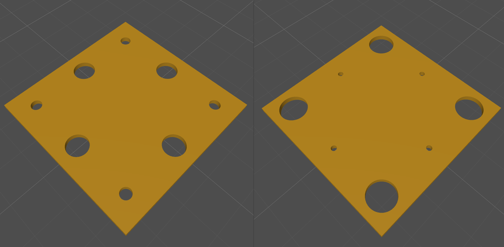

Work Portfolio
RMFG
// Work primarily done in C++ and Rust. CAD analysis was mainly done with OpenCASCADE (OCCT).
Auto nesting


Unfolding algorithm


Weld path detection

Bend and corner reliefs


Hole correction

STEP thickness editing